THE WEBSITE WASN’T USER-FRIENDLY
Focus on a streamlined, single-purpose flow throughout instead of buried forms and deep academic menus.
Scroll to see the work and the thought behind it.
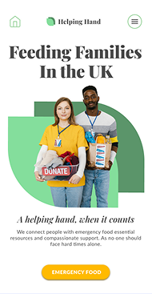
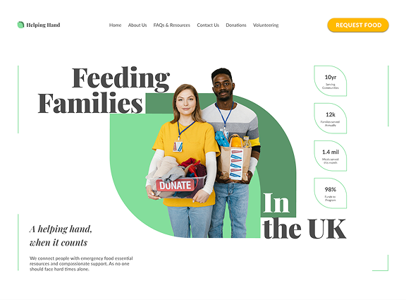
UI/UX research, AI-augmented synthesis, mobile ordering and dignity-first identity
An app that helps families and individuals experiencing food shortages request aid, schedule delivery, and track their orders — without the process feeling like a bureaucratic hurdle.
How might we design an app that gets people the food they need, quickly and without stress?
The product needed to do two things well: make it genuinely easy for someone to request food aid for themselves and their family, and make sure that food could reliably reach their home. Every design decision was measured against one question, could someone complete this task quickly and efficiently, even in a difficult moment?
Existing websites were convoluted, text-dense, and difficult to navigate on mobile. Users struggling with food insecurity experienced shame, confusion regarding eligibility, and no visibility into whether their aid request had actually arrived.
Make the core workflow intuitive at a glance. Enable users to request urgent food aid in under 3 minutes, and schedule discreet home delivery.
Research combined secondary user demographic data with AI-assisted synthesis to identify the primary friction points people face during emergency assistance.
Focus on a streamlined, single-purpose flow throughout instead of buried forms and deep academic menus.
Build a dedicated system for ordering food and recording an address and discreet delivery drop-off time.
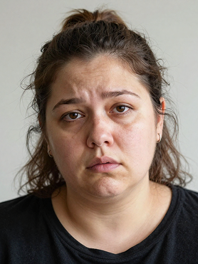
“I don’t have a car, and public transport with 3 bags of groceries is impossible with two young kids.”
A 36-year-old single mother of five who works part-time. Her income from benefits and work doesn't cover her bills, and she needs emergency food support. She doesn't drive, so food has to be delivered to her home.
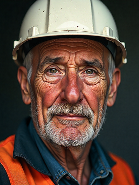
“Warehouse night shifts mean standard pantry pick-up windows are always closed when I'm awake.”
A 50-year-old full-time warehouse worker and father of two, struggling to pay bills. He needs an app that provides emergency food support and lets him choose arrival dates around his shifts.
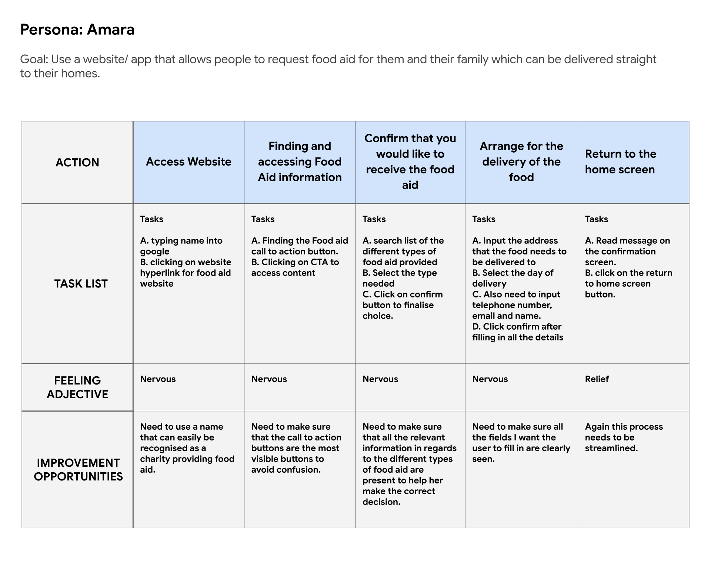
Mapping Amara's journey highlighted emotional vulnerability, clarifying where friction and intake questions should be omitted.
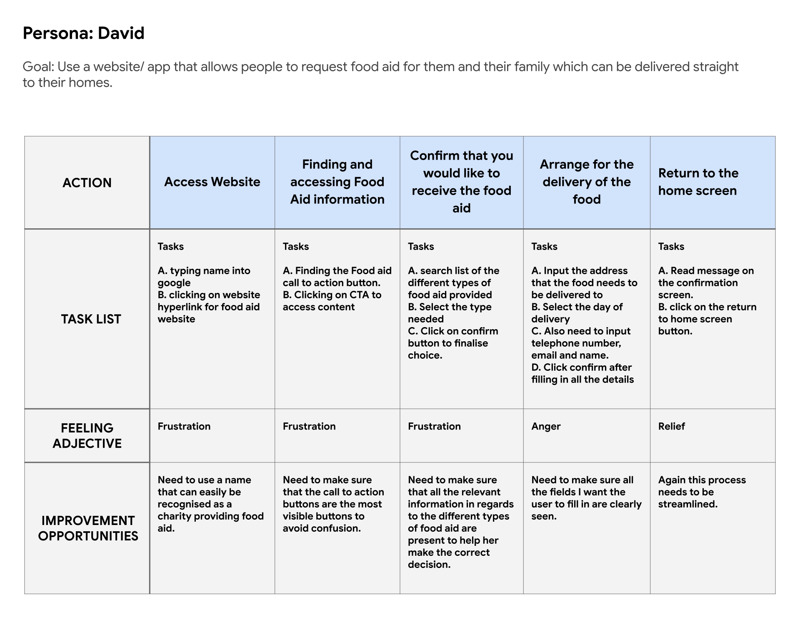
David's journey established the critical necessity for flexible scheduling and delivery notifications.
From wireframes to a testable low-fidelity prototype
The aim throughout was to keep every screen clean and minimal, so the core task (requesting food aid) never got lost in secondary interface clutter.
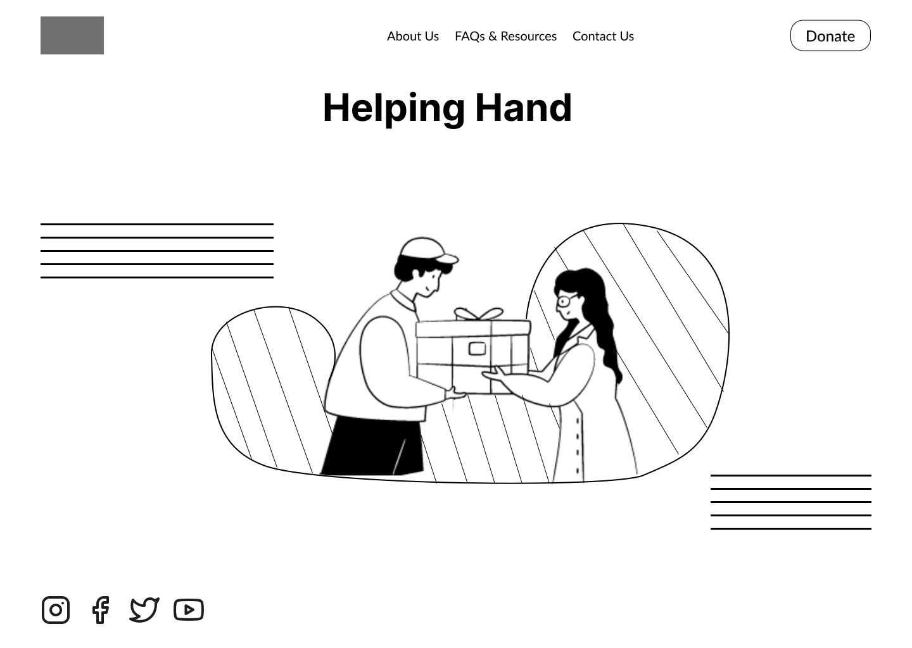
Homepage wireframe: Clear logo, nav bar, hero illustration, slogan, CTA and legal links kept minimal.
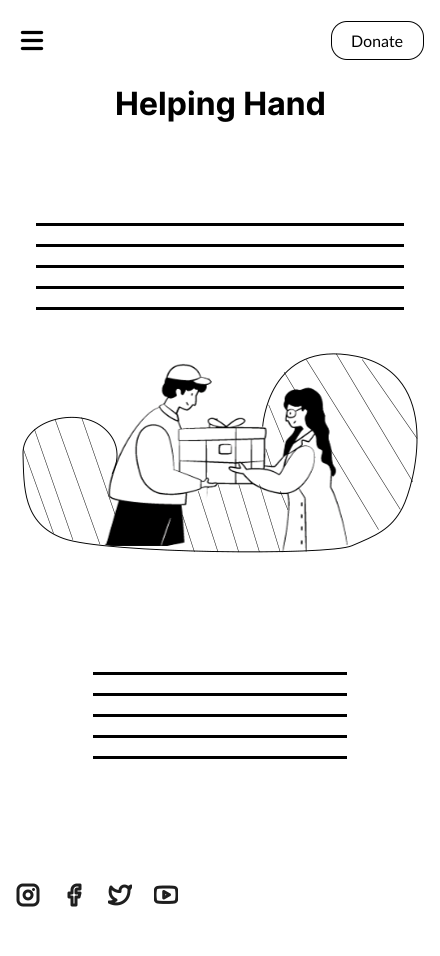
Mobile Homepage wireframes: This was the first mobile homepage layout.
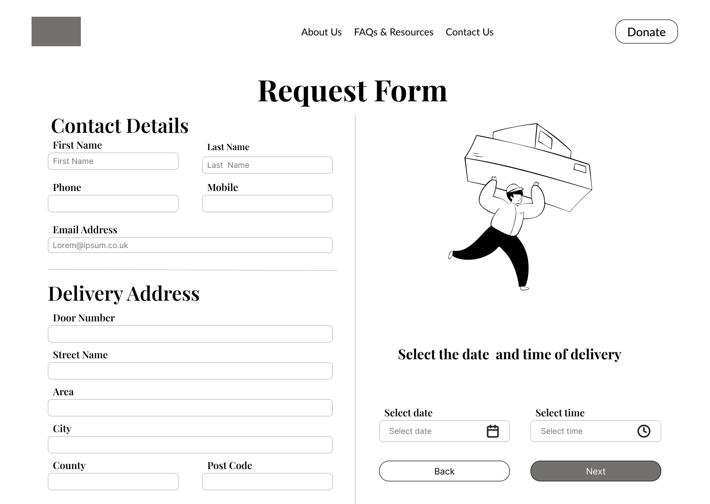
Food request form: Designed to be as easy to navigate as possible, with a clear step indicator and prominent CTAs.
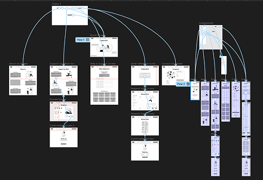
This user flow shows how a user would order a food parcel to be delivered to their house. Along with the connected About Us, Contact Us, Volunteer, FAQs and Donations pages.
View the low-fidelity prototype in Figma → (opens Figma in a new tab)Mock-ups, a high-fidelity prototype, and a second round of testing
A second usability round on the high-fidelity design surfaced deeper considerations, from payment and donation flexibility to visual consistency across design.
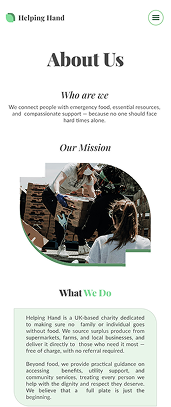
Before: Certain screens didn’t have backgrounds.
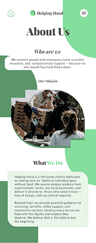
After: Consistent background applied across screens.
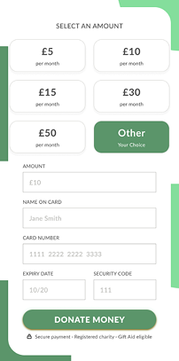
After: Card detail entry added to donation flow.
FULL FLOW PROTOTYPED IN FIGMA
The full mobile and desktop flows were built in Figma, covering the homepage, food parcel flow, donations, volunteering, and contact page.
View the high-fidelity prototype → (opens Figma in a new tab)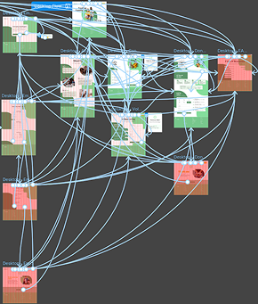
“The booking form was very straightforward to use, and navigating around was easy.”
Running two full rounds of usability testing demonstrated how much a design can be improved once real participants interact with it. Several critical friction points were resolved only after observing users navigating under time pressure.
01Make the prototype fully interactive, with a live AI chat feature represented in it.